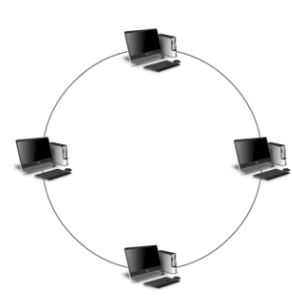
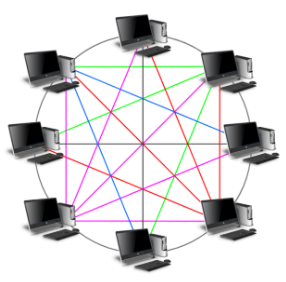
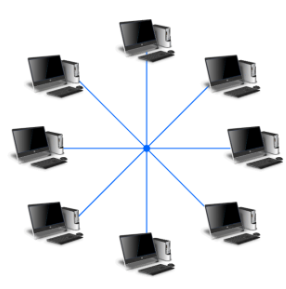
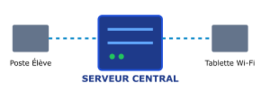
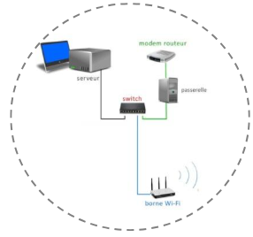

Comment créer un réseau de données ?
Topologies, matériels, serveur, accès à Internet et protections : tu vas découvrir comment est organisé le réseau du collège, puis diagnostiquer des pannes comme un technicien.
L'animation s'ouvre dans un nouvel onglet. Reviens ensuite sur cette fiche : tes réponses sont gardées.
1.À l'aide de l'animation vidéo ou de la ressource en ligne, observez les trois topologies de réseaux représentées ci-dessous :



Choisis une topologie. Clique (ou touche) un câble pour le couper ou le réparer, un ordinateur ou le switch pour le mettre en panne. Puis envoie un message d'un ordinateur à un autre.
Choisis deux ordinateurs, puis envoie un message.
2.Cochez la bonne topologie correspondant à chaque caractéristique.
Associez chaque matériel de connexion à son type de liaison, son avantage et son inconvénient principal.
Pour relier : clique un matériel, puis une proposition (ou l'inverse). Clique de nouveau un trait relié pour l'effacer. Au clavier : Tab puis Entrée.

Cochez la bonne réponse pour résoudre chaque incident :
Choisis un envoi, puis avance étape par étape. Compare le chemin d'un fichier envoyé au poste voisin et celui d'une page web.
Relie chaque matériel à son rôle correspondant en traçant un trait droit.
Pour le pare-feu et l'antivirus (protections logicielles), recherche leur rôle sur Internet.
Relie chaque protection à sa définition.
1.En tant que technicien réseau du collège, analyse les deux pannes ci-dessous et coche quel équipement est défaillant parmi le Modem (le traducteur) ou le Routeur (l'aiguilleur). Justifie ensuite brièvement.
2.Le collège utilise 3 protections contre les cybermenaces : la Passerelle (physique), le Pare-feu (logicielle réseau) et l'Antivirus (logicielle machine). Associe la bonne protection à chaque scénario.
Par groupes, choisissez un cyberdanger parmi ceux proposés et réalisez une affiche pour sensibiliser les autres élèves :
Votre affiche devra :
Coche chaque point quand votre affiche le contient.

Un réseau informatique permet de connecter différents équipements informatiques : ordinateurs, imprimantes, scanners, vidéoprojecteurs, etc.
Aujourd'hui, on parle plus largement de réseau numérique, car il permet également de connecter d'autres types d'équipements, comme les objets connectés ou les appareils domotiques.